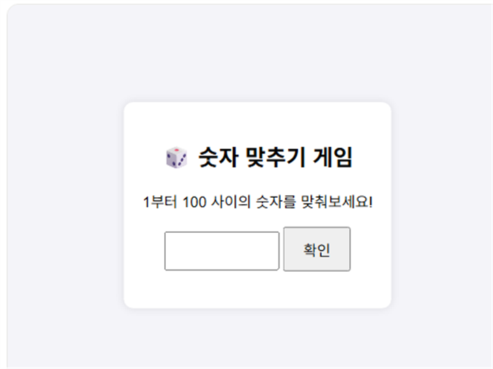

업 다운 숫자 맞추기는 컴퓨터가 정한 1부터 100 사이의 숫자를 "업(더 큼)" 또는 "다운(더 작음)" 힌트만 보고 맞히는 추리 게임입니다. 규칙은 단순하지만 몇 번 만에 맞히느냐로 실력이 갈립니다.
기본 규칙
- 1~100 사이의 숫자를 입력하고 확인 버튼을 누릅니다.
- 입력한 숫자가 정답보다 작으면 "업", 크면 "다운" 힌트가 나옵니다.
- 정답을 맞히면 시도 횟수가 표시됩니다. 시도 횟수가 적을수록 고득점입니다.
최소 시도로 맞히는 법
1. 첫 시도는 항상 50부터
범위를 절반씩 줄여나가는 "이진 탐색"이 가장 효율적입니다. 1~100의 정중앙인 50을 먼저 입력하면 어떤 정답이든 남은 범위가 절반으로 줄어듭니다.
2. 힌트를 받을 때마다 남은 범위의 중앙값을 입력
예를 들어 50에서 "다운" 힌트를 받았다면 다음은 1~49의 중앙인 25를, "업" 힌트를 받았다면 51~100의 중앙인 75를 입력하는 식으로 계속 절반씩 좁혀가면 최대 7번 안에 반드시 맞힐 수 있습니다.
직접 플레이해보고 싶다면 여기서 바로 시작할 수 있습니다.